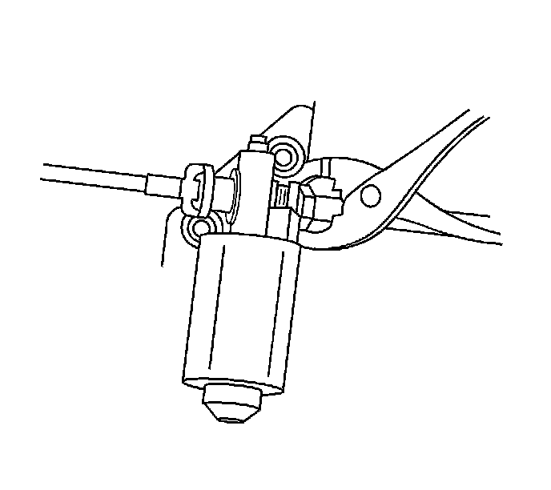
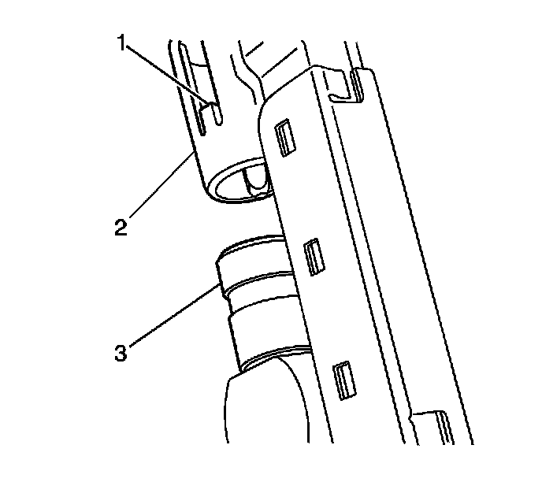

Brake Pedal Adjuster Actuator Cable Replacement
Brake Pedal Adjuster Actuator Cable Replacement
Removal Procedure
1. Remove the adjustable brake pedal from the vehicle. Refer to Brake Pedal Assembly Replacement (LHD) (Brake Pedal Assembly Replacement (LHD))Brake Pedal Assembly Replacement (RHD) (Brake Pedal Assembly Replacement (RHD)) .

2. Remove the adjustable brake pedal cable from the motor. In order to release the adjustable brake pedal cable from the adjustable brake pedal motor carefully squeeze the collar of the cable and pull outward from the motor.

3. In order to remove the adjustable brake pedal cable from the brake pedal assembly carefully lift the retaining tabs (1) on the cable end using 2 thin bladed tools.
4. Carefully pull upward remove the adjustable brake pedal cable assembly from the brake pedal assembly.
Installation Procedure
Important: Ensure that the adjustable accelerator pedal and adjustable brake pedal are synchronized in the full forward front of vehicle position.
Important: Do not exceed 0.5 N.m (4.43 lb in) of torque.
1. Synchronize the accelerator pedal to the full forward, front of vehicle position. Using an adjustable wrench on the adjustable cable end and rotate the cable to move the pedal to the full forward, front of vehicle position.
2. Remove the adjustable wrench from the cable.
Important: Do not exceed 0.5 N.m (4.43 lb in) of torque.
3. Connect the adjustable brake pedal cable to the motor.
4. Install the adjustable brake pedal cable assembly (2) to the adjustable brake pedal assembly (3) until the locking tabs (1) are locked into position. Ensure that adjustable brake pedal cable retainer is locked into place by carefully pulling upwards on the cable.
5. Carefully insert a square drive tool into the adjustable brake pedal motor.
Important: Do not exceed 0.5 N.m (4.43 lb in) of torque.
6. Carefully rotate the adjustable brake pedal adjustment drive screw until the brake pedal is in the full forward, front of vehicle position.
7. Remove the square drive tool.
8. Install the adjustable brake pedal to the vehicle. Refer to Brake Pedal Assembly Replacement (LHD) (Brake Pedal Assembly Replacement (LHD))Brake Pedal Assembly Replacement (RHD) (Brake Pedal Assembly Replacement (RHD)) .